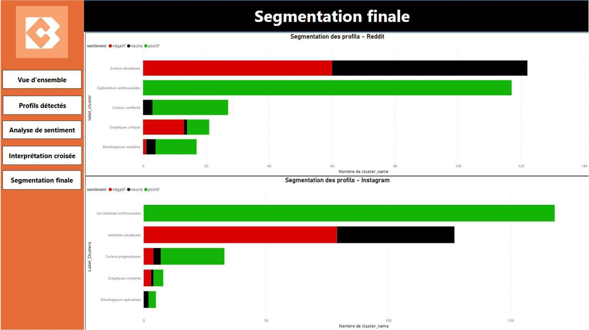
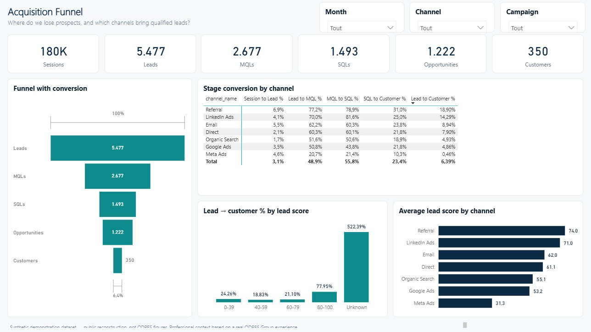
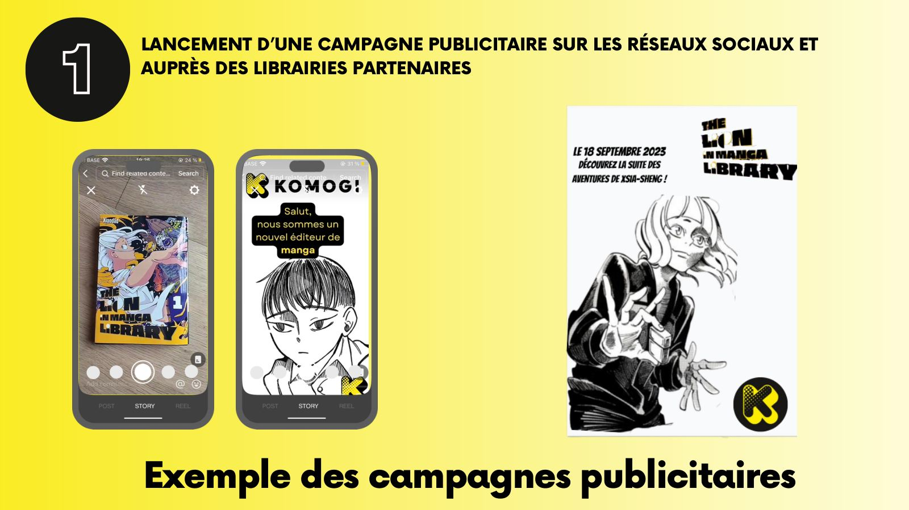
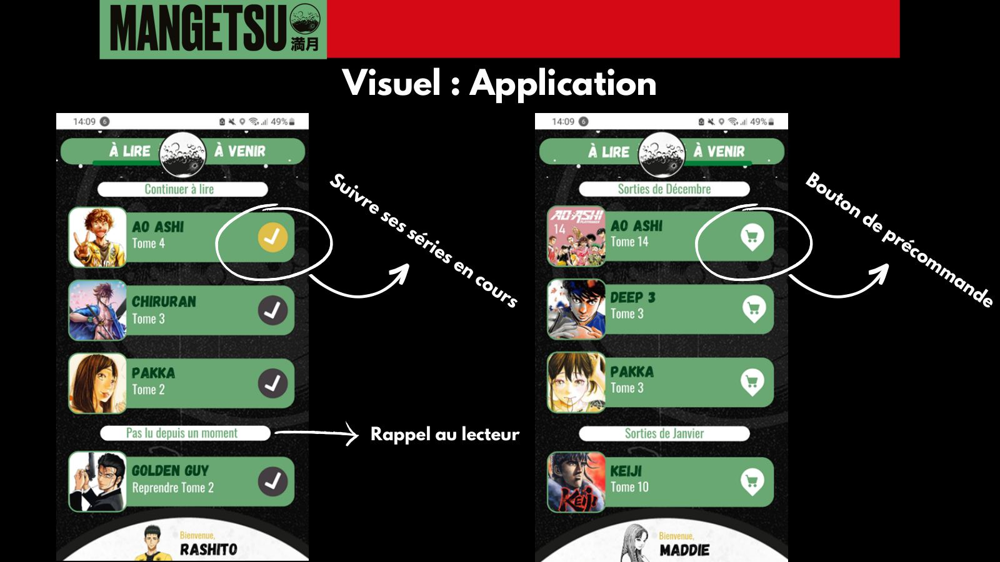
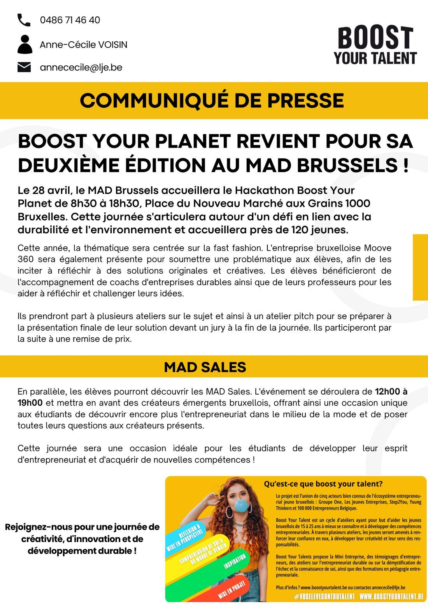
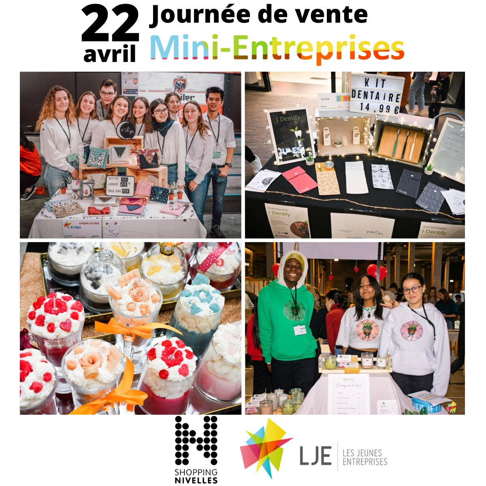
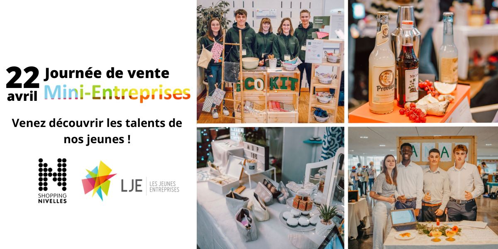
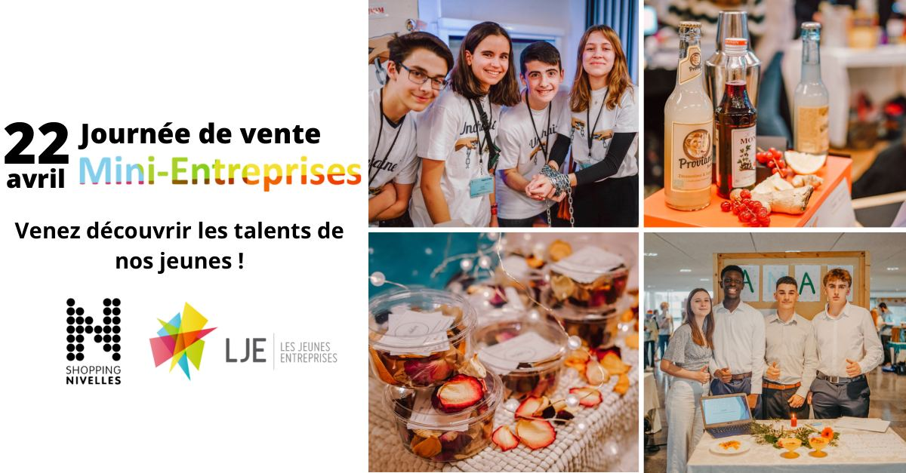

I start with the audience.
Surveys, interviews and segmentation before any idea. I ask people what they do, then build on what they answer.
- 135
- readers surveyed
- 8
- interviews
← Portfolio Harry Mulembwe
I work on audience research, segmentation, campaign reporting, customer data, content and community, CRM
Marketing graduate first, data analyst next. I study an audience, segment it, measure what a campaign does and turn the numbers into actions a marketing, CRM or sales team can take. I can also produce the content, which helps me read it.
Brussels, Belgium
Open to opportunities in Brussels
I started in marketing before moving to data, so I ask what a marketing or sales team will do with the numbers before I build them. The three steps below happen on the same project.
Surveys, interviews and segmentation before any idea. I ask people what they do, then build on what they answer.
Customer profiles segmented, audience clusters named, and GA4, GTM and Power BI reporting on acquisition and campaign KPIs.
Recurring reporting that ends in marketing and commercial recommendations, and the content itself when needed: banners, stories, press documents, in Canva and Photoshop.
My first degree is in Marketing. Before analysing performance data, I learned to study an audience, build a strategy and produce content. It helps me ask the right question before building an analysis: what will the marketing, CRM or sales team do with it? The projects below go from customer research to segmentation, reporting and campaigns.

01Internship · Marketing Data Analyst + final-year thesis · 2025
Audience Segmentation & Customer Insights
About 8,000 customer profiles segmented during the internship, then 1,985 public Reddit and Instagram messages turned into six audience profiles with a communication approach for each.

02Professional experience · Digital Marketing & Data Assistant · 2025–2026
Marketing Performance & KPI Reporting
Acquisition spend, leads, pipeline and recurring revenue connected in one reporting model and turned into marketing and commercial recommendations. Rebuilt publicly with synthetic data.

03Individual project · Final-year thesis
Marketing Research & Campaign Strategy
A 12-month acquisition and retention strategy for an independent manga publisher, built on qualitative and quantitative research with 18–35 readers in French-speaking Belgium.

04Team project · survey, prototypes, presentation
Customer Insights & Omnichannel Strategy
How a manga publisher can support a series volume after volume: nine recommendations mapped on the reader's journey, from TikTok and Discord to a manga box, a QR code and an app.
05Entrepreneurial project · founder
Brand, Content & Social Media
Campaign banners, stories, lifestyle mock-ups and product visuals for a real anime-inspired clothing brand, made with Photoshop and Canva.

06Internship · Feb – May 2023
Content, Communication & Event Marketing
Communication intern: press release and press kit, poster, stories, a nine-format event campaign and the LJE Challenge award cheques, for a non-profit that develops young people's entrepreneurial spirit.



9 formats07LJE · Campaign
Multi-format Campaign
One event campaign adapted to nine formats, from a 3840×1080 screen to stories, posts and an A3 poster, with one consistent identity.
View the campaign →Each step added a tool to the same job: understanding people and helping a team decide.
Where the audience research and the manga publishing projects come from.
Press release, press kit, poster, stories, campaign formats and award cheques.
SQL, Python and Power BI, to measure what marketing does.
Audience segmentation and Power BI dashboards on social-media data.
Digital acquisition analysis, KPI tracking, reporting and recommendations.
No percentage bars or stars. Segmentation, reporting, research, strategy, content and community, each pointing to a case study.
Case study online
Toolbox from my Marketing Analytics & Customer Insights CV and the projects above. Certified items are marked with a dot.
I studied Marketing at EPHEC in the Arts & Culture track, which is where the manga publishing projects come from: audiences I know well, and a market where a small publisher has to be inventive to be seen.
Since then I have segmented about 8,000 customer profiles, built Power BI dashboards on marketing KPIs, written press releases, run social media accounts and built a clothing brand’s content. The Business Data Analysis specialisation came after, so that what a marketing team creates can be measured and improved.
Open to opportunities in Brussels
Marketing analytics, customer insights and CRM roles in Brussels: segmentation, campaign and KPI reporting, customer data, content and community.
Harrymulembwe09@gmail.com · 1150 Woluwe-Saint-Pierre · Brussels